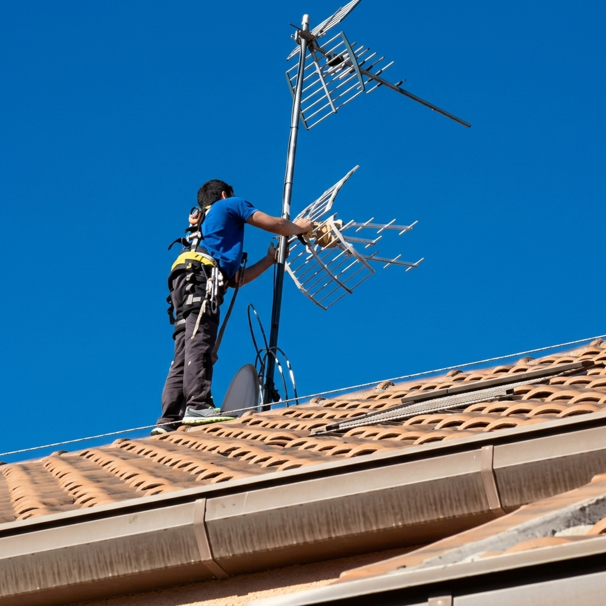
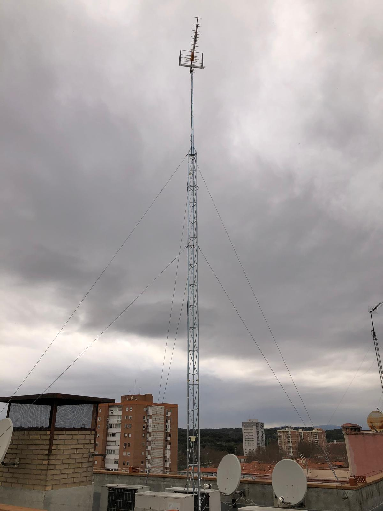
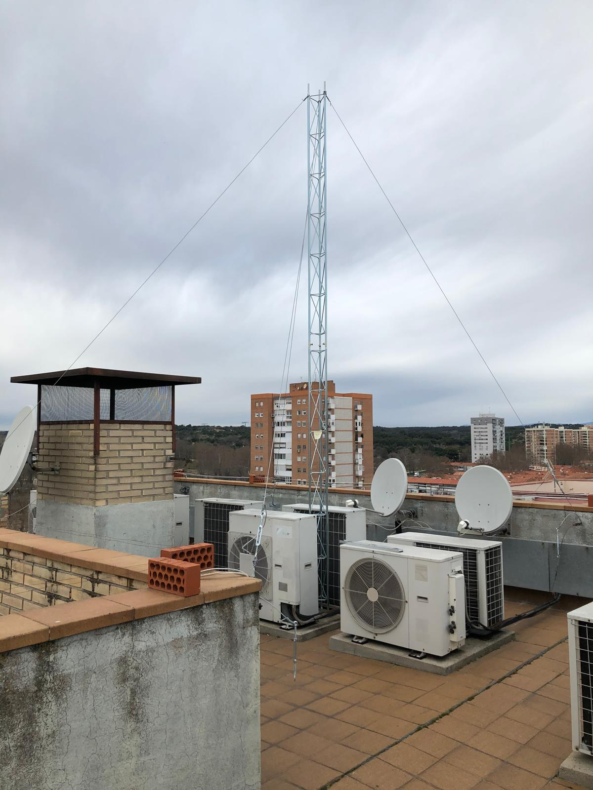

Pedir presupuesto →Una comunidad de vecinos en Madrid llevaba tiempo sin recibir correctamente la señal TDT. La antena existente era antigua, estaba deteriorada y no daba cobertura a todos los pisos del edificio.
TEF instaló una torre de 3 tramos con antena nueva para mejora de TDT, garantizando la correcta distribución de la señal a todas las viviendas de la comunidad.
Recepción TDT óptima en todos los pisos del edificio. La comunidad de vecinos recuperó la señal completa sin incidencias posteriores.

